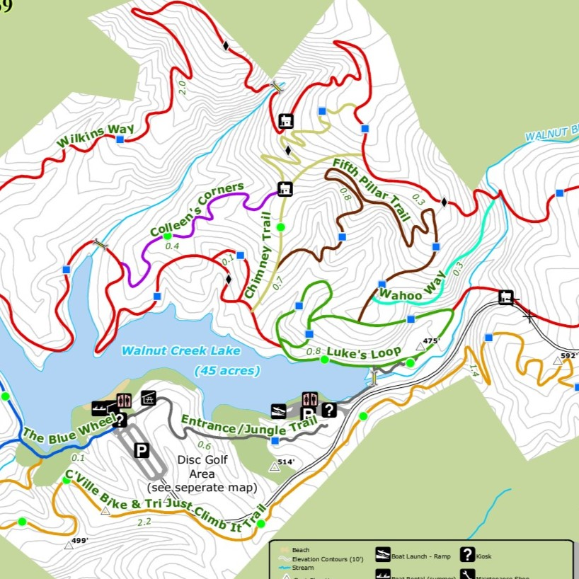
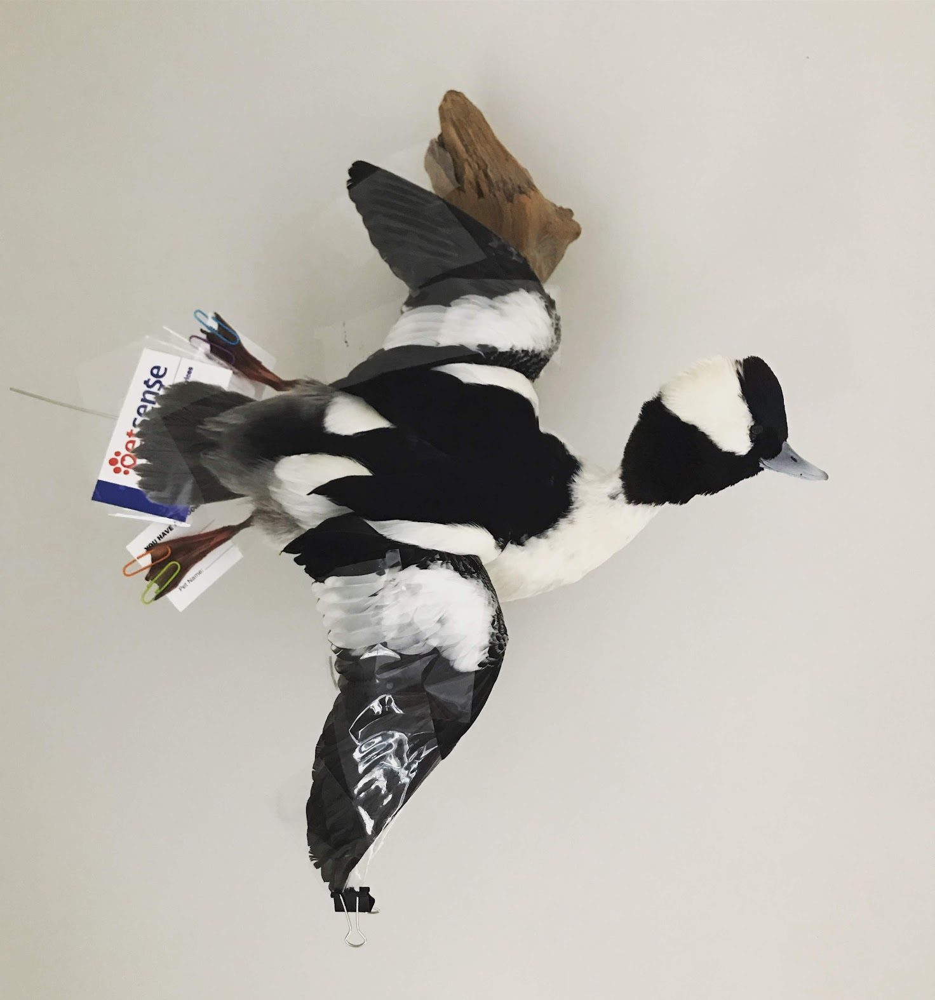
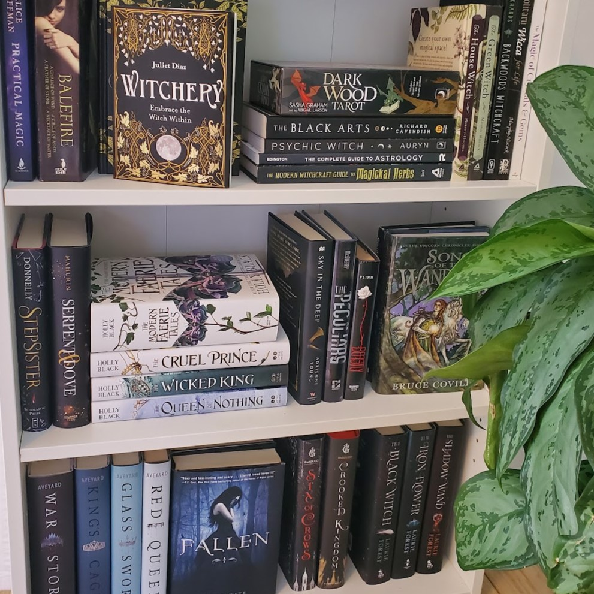
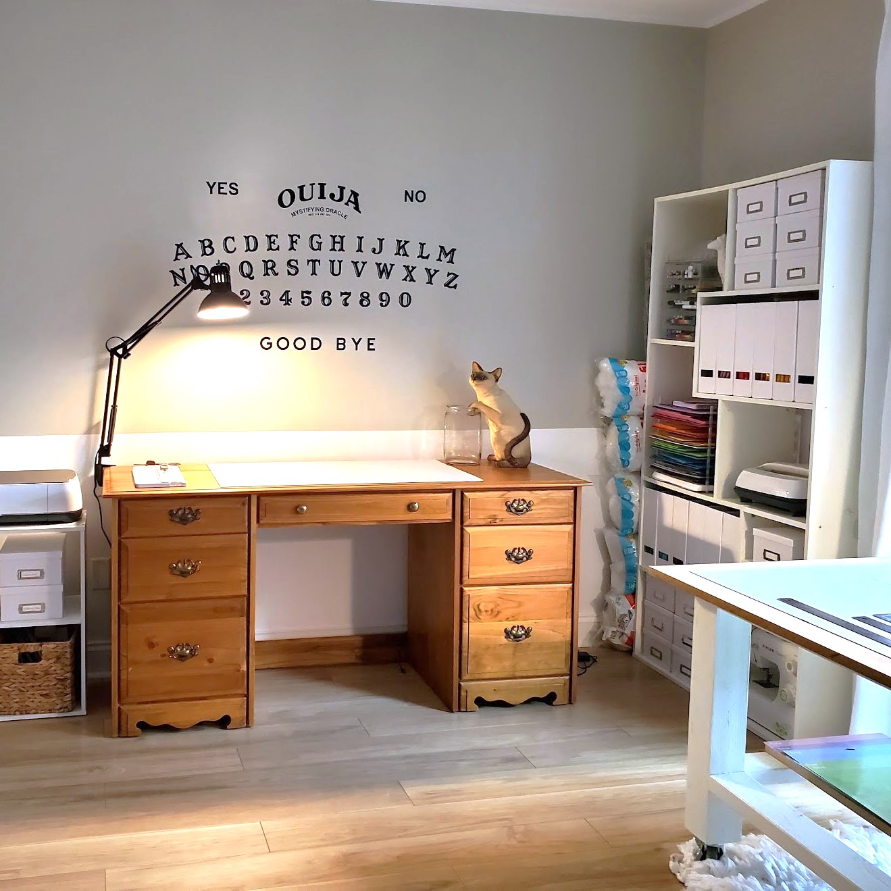
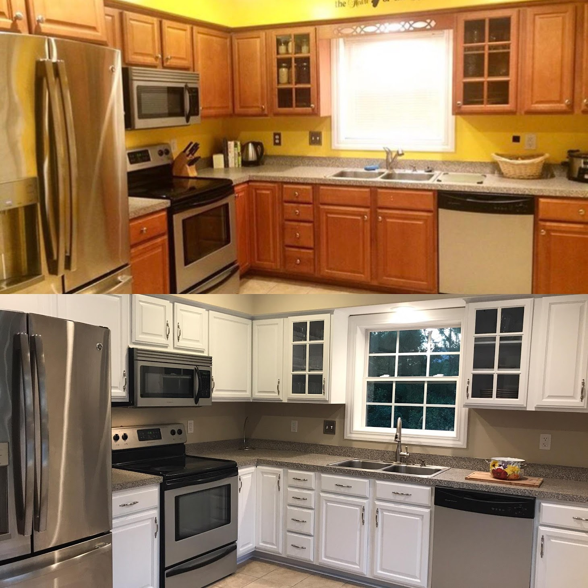

|  | HikingHiking has become my newest and most fulfilling hobby. I take my former couch potato, a dog named Axel, on my adventures through the woods. Currently, we are exploring trails winding through the mountains of Charlottesville, VA on summer holiday. Much to Axel’s dismay, I signed us up for the Conqueror’s Virtual LOTR challenge which entails a 145-mile hike from the Shire to the Fellowship. |
|  | TaxidermyI discovered a love of taxidermy in 2019. I found the process intriguing and the resulting preservation to be both beautiful and artistic. To learn more, I decided to attend Lenior Community College’s Continuing Education Taxidermy Program. As someone who doesn’t support trophy hunting, I work exclusively with specimens that have been killed by car injuries or are the result of humane euthanasia by a licensed pest removal specialist. |
|  | ReadingSince childhood, reading has always been a hobby of mine. One of the magical aspects of reading is the ability to escape into fictional worlds and embark on incredible journeys with the characters. With the rise of social media, most notably GoodReads, connecting with fellow book lovers and getting reccomendations are wonderful aspects of the reading community. Reading also allows me to continuously learn and grow, whether it's gaining knowledge about different cultures or expanding my vocabulary. |
|  | CraftingDuring the covid pandemic, I started my crafting journey with the purchase of a Cricut Maker. Little did I know not only the joy this machine would bring me, but that it would also become useful for gift-making, décor, t-shirts, and much more. Crafting has become my go-to therapy; it helps me unwind, relieve stress, and express my creativity on a small scale. |
|  | RenovatingI take pride in being a DIY enthusiast, tackling various home renovation projects with my own hands. Every renovation project comes with its own set of challenges, and I enjoy problem-solving and finding creative solutions. It's amazing what a little creativity and resourcefulness can achieve. When done properly, home improvements are a smart investment in the long run as demonstrated by the sale of my previous home, 10092 Windward Drive. |